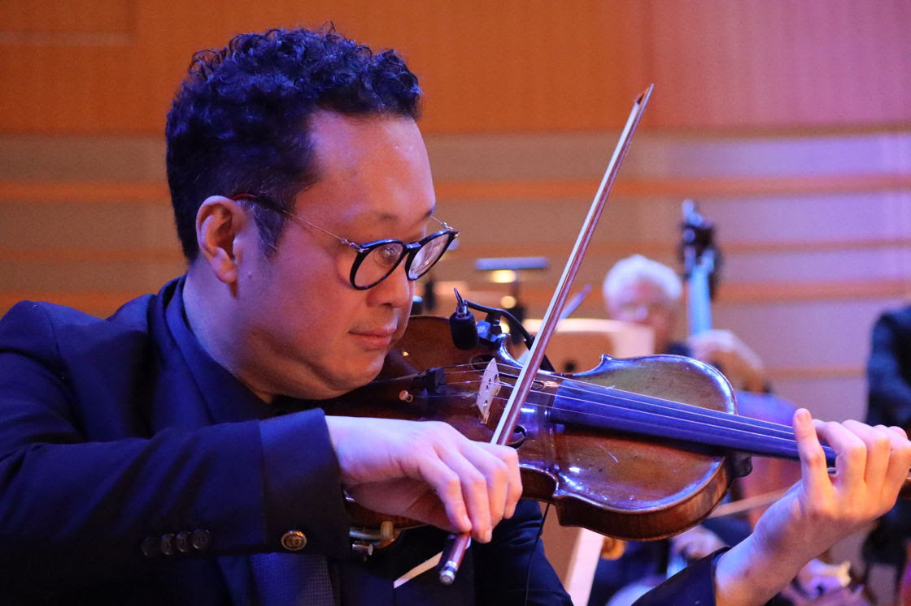
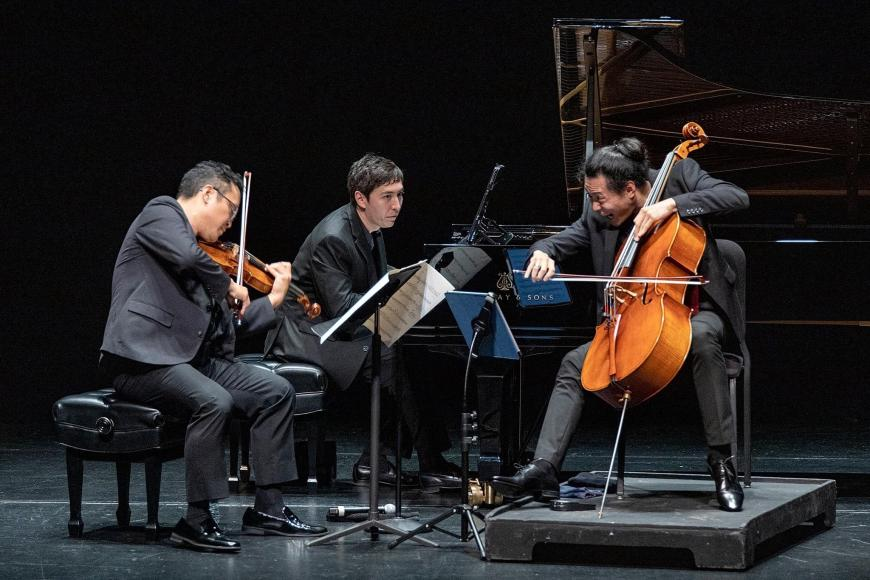

Performance
The performing life.
Five orchestras led, guest appearances from Perth to Stockholm, a resident piano trio, and regular work in the recording studios of Los Angeles.

Concertmaster
The orchestras he has led.
Watch
Orchestras & conductors
The orchestras and the conductors.
Beyond the posts he has held, Dennis Kim has appeared as guest concertmaster on four continents, and has worked with many of the leading conductors of his generation.
As guest concertmaster
- London Philharmonic
- BBC Symphony
- BBC Scottish Symphony
- Royal Stockholm Philharmonic
- Bergen Philharmonic
- Orchestre National de Lille
- Orquesta Sinfónica de Navarra
- Qatar Philharmonic
- Singapore Symphony
- Malaysia Philharmonic
- Western Australia Symphony
- KBS Symphony
- Incheon Philharmonic
- North Carolina Symphony
- Kitchener-Waterloo Symphony
- Montpelier Symphony
Conductors
- Carl St.Clair
- Alexander Shelley
- Riccardo Chailly
- Charles Dutoit
- Riccardo Muti
- Hannu Lintu
- Han-Na Chang
- André Previn
- Sir Simon Rattle
Soloist
From Bach to Wineglass.
He made his solo debut at fourteen with the Toronto Philharmonic and has since performed as a soloist with major orchestras across Asia, appearing annually with the Hong Kong, Seoul, Tampere and Buffalo Philharmonics in works by Bach, Brahms, Glass, Penderecki and Seyfried.
With Pacific Symphony he has performed a wide range of repertoire, including the 2023 world premiere of John Wineglass's violin concerto Joshua Tree: Scenes from the Mojave under Carl St.Clair.
Recent appearances include the Lebanon Philharmonic, the National Orchestra of Cuba, The Orchestra Now at Lincoln Center, and the Busan Philharmonic on its tour of Japan.
Chamber music
Trio Barclay.
With cellist Jonah Kim and pianist Sean Kennard, the trio is the resident ensemble of the Irvine Barclay Theatre. It has commissioned more than nine new works by living composers and has released two albums, among them Beyond the Pacific on Orchid Classics, three works written for the ensemble by Sheridan Seyfried, John Wineglass and Michael Fine.
The trio has performed internationally and provided the live score for Defining Courage, a film honouring the soldiers of the 100th Infantry Battalion and 442nd Regimental Combat Team.
Dennis Kim also appears regularly with Orli Shaham and principal players of Pacific Symphony in the Café Ludwig series.

Summer
For the screen
As a recording artist Dennis Kim can be heard on the soundtracks of some of the last decade's largest films, working with composers including John Williams, John Powell and Alan Menken.
Minions & Monsters
John Powell · 2026
Star Wars: The Rise of Skywalker
John Williams
Moana 2
Feature
Jumanji: The Next Level
Feature
The Lego Movie 2
Feature
The Man from Toronto
Feature
Toy Story 4
Feature
The Mandalorian
Television
Bridgerton
Television
It Chapter Two
Feature
Transformers VII
Feature
Sing 3
Feature
and many more